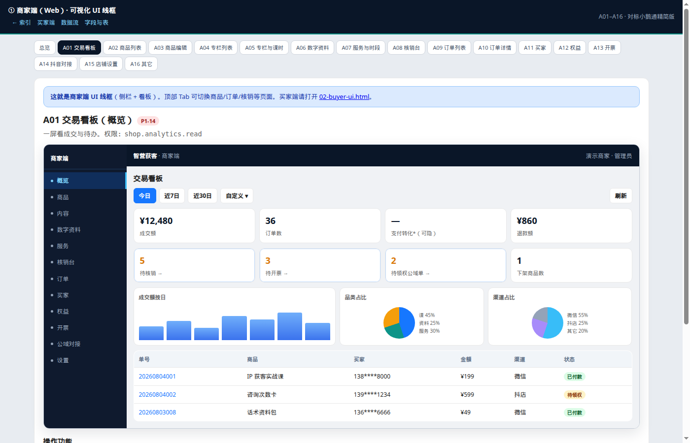
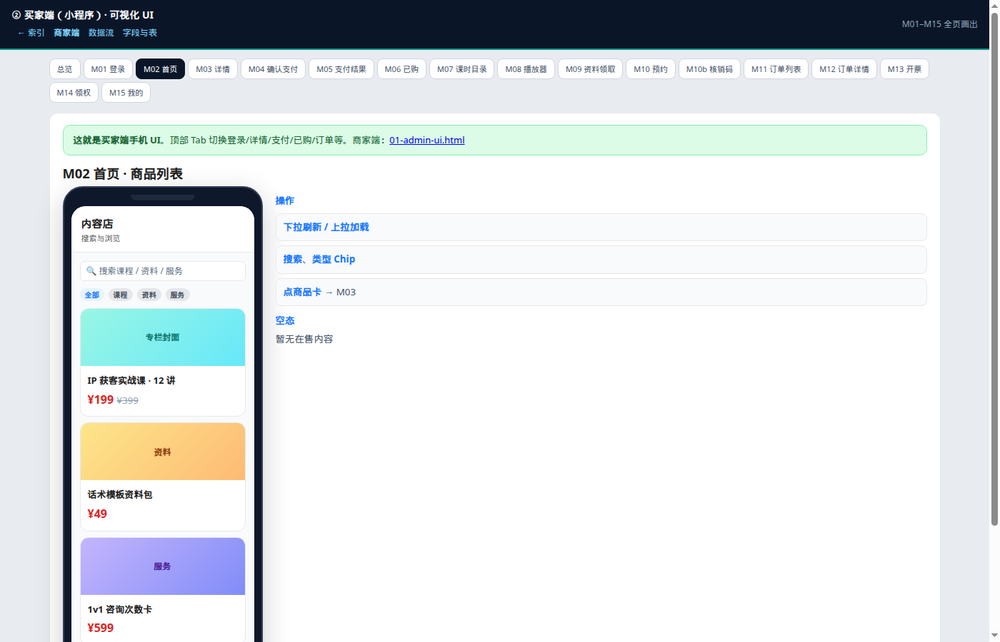

用浏览器打开下方链接（不要用 Cursor 文本预览）。默认即见画出的界面线框。
cursor/shop-phase1-prd-ui-8b7d（不在 master）。请执行：git fetch origingit checkout cursor/shop-phase1-prd-ui-8b7dcontent-acquisition-shop-prd-phase1/index.html

03-data-flows.html（数据流）、04-data-model.html（表字段）、
【点我看UI】商家端与买家端.html（与本 index 相同入口）。